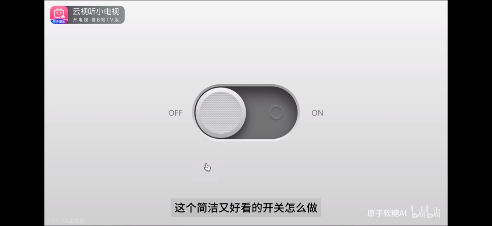
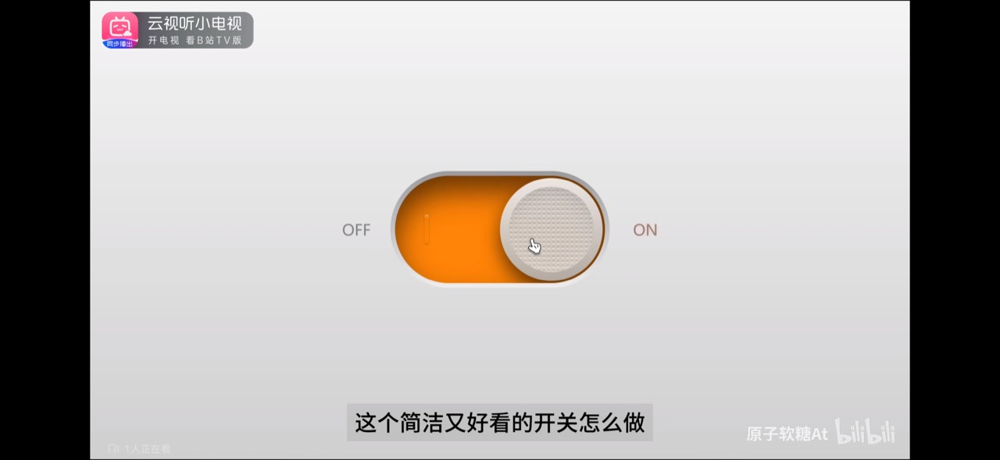

点击切换 OFF / ON
支持 Tab 聚焦，空格或 Enter 切换
浮雕橙 · 立体开关
根据两张参考图还原：深灰与橙色凹槽、金属感边缘、细密纹理滑块和浮雕电源标记。
主体由 HTML / CSS 绘制，少量 JavaScript 控制切换。
关闭 · 图片 1 对应状态（固定展示）
灰色凹槽 / 滑块在左
开启 · 图片 2 对应状态（固定展示）
橙色凹槽 / 滑块在右
键盘与按压 · 可交互补充状态
Tab 显示焦点环 / 按住显示按压阴影
禁用 · 补充状态
不可操作 / 降低不透明度
原始参考图片

